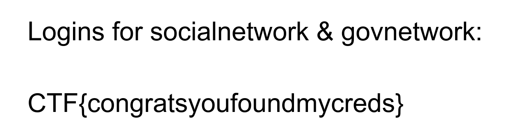

GoogleCTF Beginner's Quest 2019 - Home Computer
Description
Blunderbussing your way through the decision making process, you figure that one is as good as the other and that further research into the importance of Work Life balance is of little interest to you. You’re the decider after all. You confidently use the credentials to access the “Home Computer.” Something called “desktop” presents itself, displaying a fascinating round and bumpy creature (much like yourself) labeled “cauliflower 4 work - GAN post.” Your 40 hearts skip a beat. It looks somewhat like your neighbors on XiXaX3. ..Ah XiXaX3… You’d spend summers there at the beach, an awkward kid from ObarPool on a family vacation, yearning, but without nerve, to talk to those cool sophisticated locals. So are these “Cauliflowers” earthlings? Not at all the unrelatable bipeds you imagined them to be. Will they be at the party? Hopefully SarahH has left some other work data on her home computer for you to learn more.
Solving
Recon:
$ file family.ntfs
family.ntfs: DOS/MBR boot sector, code offset 0x52+2, OEM-ID "NTFS ", sectors/cluster 8, Media descriptor 0xf8, sectors/track 0, dos < 4.0 BootSector (0x80), FAT (1Y bit by descriptor); NTFS, sectors 51199, $MFT start cluster 4, $MFTMirror start cluster 3199, bytes/RecordSegment 2^(-1*246), clusters/index block 1, serial number 072643f694104cb6f
$ cat note.txt
If you're on MacOS, you can rename .ntfs to .dmg
A DOS/MBR boot sector! Ha! Let’s list the partition tables with fdisk:
$ fdisk -l family.ntfs
Disk family.ntfs: 25 MiB, 26214400 bytes, 51200 sectors
Units: sectors of 1 * 512 = 512 bytes
Sector size (logical/physical): 512 bytes / 512 bytes
I/O size (minimum/optimal): 512 bytes / 512 bytes
Disklabel type: dos
Disk identifier: 0x00000000
Okay, no partitions… Let’s mount the image and see if we can inspect its content:
$ mkdir mnt_point
$ sudo mount -o loop family.ntfs mnt_point
$ ll mnt_point
Permissions Size User Group Date Modified Name
.rwxrwxrwx 0 root root 13 Jun 2:37 bootmgr
.rwxrwxrwx 0 root root 13 Jun 2:37 BOOTNXT
.rwxrwxrwx 0 root root 13 Jun 2:37 pagefile.sys
drwxrwxrwx - root root 13 Jun 2:37 Program Files
drwxrwxrwx - root root 13 Jun 2:37 Program Files (x86)
.rwxrwxrwx 0 root root 13 Jun 2:37 Setup.log
.rwxrwxrwx 0 root root 13 Jun 2:37 SSUUpdater.log
.rwxrwxrwx 0 root root 13 Jun 2:37 swapfile.sys
drwxrwxrwx - root root 13 Jun 2:37 Users
drwxrwxrwx - root root 13 Jun 2:38 Windows
I decided to go for the /Users directory, Documents contain a credentials.txt which is the only file with a non-zero size:
$ ll Documents
Permissions Size User Group Date Modified Name
.rwxrwxrwx@ 58 root root 13 Jun 2:38 credentials.txt
.rwxrwxrwx 0 root root 13 Jun 2:37 document.pdf
.rwxrwxrwx 0 root root 13 Jun 2:37 preview.pdf
$ cat Users/Family/Documents/credentials.txt
I keep pictures of my credentials in extended attributes.
Okay, first, what’s an extended attribute?
Extended file attributes are file system features that enable users to associate computer files with metadata not interpreted by the filesystem, whereas regular attributes have a purpose strictly defined by the filesystem (such as permissions or records of creation and modification times). Unlike forks, which can usually be as large as the maximum file size, extended attributes are usually limited in size to a value significantly smaller than the maximum file size. Typical uses include storing the author of a document, the character encoding of a plain-text document, or a checksum, cryptographic hash or digital certificate, and discretionary access control information.
Some google-fu later, I found out that getfattr can retrieved extended attributes of a file:
$ getfattr mnt_point/Users/Family/Documents/credentials.txt
# file: mnt_point/Users/Family/Documents/credentials.txt
user.FILE0
Even better, getfattr has a dump option according to its man page:
-d, –dump Dump the values of all extended attributes associated with pathname.
$ getfattr -d mnt_point/Users/Family/Documents/credentials.txt > user.FILE0
$ head user.FILE0
# file: mnt_point/Users/Family/Documents/credentials.txt
user.FILE0=0siVBORw0KGgoAAAANSUhEUgAABNIAAAFTCAIAAABzubZeAAAAA3NCSVQICAjb4U/gAAAAGXRFWHRTb2Z0d2FyZQBnbm9tZS1zY3JlZW5zaG907wO/PgAAIABJREFUeJzs3XlgDPf/B/7Z3PfhSNxnLjmauONoiKiEJNQRxNlqtUpb6qhP3VV1qx6qFKVoBFUUcVWEICE0IcQRIagICbmvzTG/P/b729/83u/Z2dnNzm7C8/GXHe+Zee9kZvb9ep8ylmUZAAAAAAAAAGkYGToDAAAAAAAA8DpD2AkAAAAAAAASQtgJAAAAAAA [...]
Okay, looks like we’ve got something!
Let’s extract the Extended Attribute as hex:
$ getfattr -d mnt_point/Users/Family/Documents/credentials.txt -e hex > credentials.hex
Okay, we need to clean a few things from that dump:
- remove the comment:
# file: mnt_point/Users/Family/Documents/credentials.txt - remove the
user.FILE0=0x
Now, we can use xxd to turn that hexdump back to a binary:
$ xxd -r -p credentials.hex credentials.bin
$ file credentials.bin
credentials.bin: PNG image data, 1234 x 339, 8-bit/color RGB, non-interlaced

Flag: CTF{congratsyoufoundmycreds}